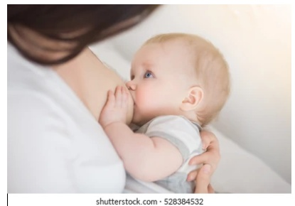
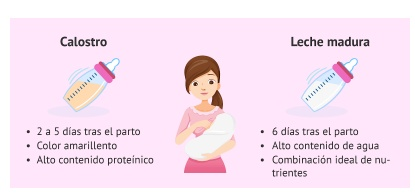
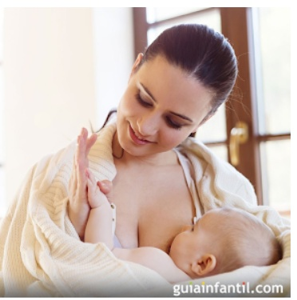

LA IMPORTANCIA DE LA LACTANCIA MATERNA EN LOS PRIMEROS AÑOS DE VIDA
UN COMPROMISO CON LA SALUD Y EL DESARROLLO INFANTIL
Introducción
La lactancia materna constituye una de las prácticas más importantes para garantizar el crecimiento y desarrollo saludable de los niños durante sus primeros años de vida. Aunque en la actualidad existen diversas alternativas de alimentación infantil, considero que ninguna puede igualar los beneficios nutricionales, inmunológicos y emocionales que ofrece la leche materna. Por ello, sostengo que la lactancia materna debe ser promovida y protegida como una estrategia fundamental de salud pública, debido a su impacto positivo en la salud infantil, el bienestar materno y el desarrollo de la sociedad.

Nota. Tomado de Shutterstock, Shutterstock.
La leche materna es un alimento vivo y dinámico que se adapta constantemente a las necesidades del bebé. Según la Secretaría de Salud (2024), contiene proteínas, grasas, carbohidratos, vitaminas y minerales en proporciones adecuadas para cada etapa del crecimiento infantil. Además, aporta anticuerpos y factores inmunológicos que fortalecen el sistema de defensa del bebé, ayudándolo a prevenir infecciones, alergias y diversas enfermedades durante la infancia.
Impacto en la salud y el desarrollo integral del niño
Desde una perspectiva científica, diversos estudios han demostrado que los beneficios de la lactancia materna trascienden la nutrición básica. Los niños amamantados presentan menor riesgo de desarrollar enfermedades infecciosas, obesidad, asma, diabetes y problemas cardiovasculares en etapas posteriores de la vida. Asimismo, la composición de la leche materna favorece el adecuado desarrollo de órganos vitales y del sistema neurológico, contribuyendo al desarrollo cognitivo y al aprendizaje futuro (Muro-Valdez et al., 2023).

Nota. Adaptado de Ventaja de la lactancia materna para el vínculo con el bebé, por Marta Barranquero Gómez y Zaira Salvador, 2024, Reproducción Asistida ORG. Consultar fuente.
El fortalecimiento del vínculo madre-bebé
Además de sus beneficios físicos, la lactancia fortalece el vínculo afectivo entre la madre y el bebé. Este contacto cercano favorece la seguridad emocional del niño y contribuye a su desarrollo psicológico. Este aspecto suele ser subestimado, cuando en realidad representa una de las bases fundamentales para la construcción de relaciones afectivas saludables durante la vida. Asimismo, diversos organismos de salud reconocen que la lactancia promueve una conexión emocional profunda entre madre e hijo (Secretaría de Salud, 2024).

Nota. Adaptado de Vínculo madre e hijo y lactancia, por Sara Cañamero de León, 2016, Guía Infantil. Consultar fuente.
Beneficios de la lactancia materna para la madre
La lactancia materna también beneficia significativamente a las madres. Estudios científicos indican que amamantar reduce el riesgo de cáncer de mama, cáncer de ovario, diabetes tipo 2 e hipertensión arterial. Asimismo, favorece la recuperación posparto y fortalece el vínculo emocional con el recién nacido (Muro-Valdez et al., 2023).
Relevancia social y económica de la lactancia materna
La promoción de la lactancia materna no solo beneficia a las familias, sino también a la sociedad. Al disminuir la incidencia de enfermedades infantiles y maternas, se reducen los gastos en atención médica y medicamentos. Además, la leche materna constituye una opción sostenible y ecológica, ya que no requiere procesos industriales ni genera residuos asociados a envases o empaques (Secretaría de Salud, 2024).
Recurso audiovisual recomendado
Para complementar la información presentada en este blog, se recomienda visualizar el siguiente video:
Disponible en YouTube: Ver video en YouTube ↗
Reflexión personal
La lactancia materna representa una de las acciones más importantes para garantizar el bienestar de los niños desde sus primeros días de vida. Más allá de proporcionar alimento, contribuye al fortalecimiento de la salud física, emocional y cognitiva del bebé, al mismo tiempo que beneficia a la madre y a la sociedad. Considero que promover la lactancia materna es una responsabilidad compartida entre las familias, los profesionales de la salud y las instituciones, ya que constituye una inversión en el futuro de las nuevas generaciones.
Conclusión
En conclusión, la lactancia materna es mucho más que una forma de alimentación; es una inversión en la salud presente y futura de los niños y sus madres. La evidencia científica demuestra que sus beneficios abarcan aspectos nutricionales, inmunológicos, emocionales y sociales que difícilmente pueden ser sustituidos por otros métodos de alimentación. Por esta razón, considero que las instituciones de salud, los gobiernos y la sociedad en general deben continuar promoviendo y apoyando la lactancia materna como una práctica esencial para garantizar un desarrollo infantil saludable y una mejor calidad de vida para las futuras generaciones.
Referencias
Muro-Valdez, J. C., Meza-Ríos, A., Aguilar-Uscanga, B. R., López-Roa, R. I., Medina-Díaz, E., Franco-Torres, E. M., & Zepeda-Morales, A. S. (2023). Breastfeeding-related health benefits in children and mothers: Vital organs perspective. Medicina, 59(9), 1535. https://pubmed.ncbi.nlm.nih.gov/37763654/
Revista Sanitaria de Investigación. (2024). Beneficios de la lactancia materna: Impacto integral en la salud materno-infantil. Consultar referencia
Secretaría de Salud. (2024). La importancia de la lactancia materna: Un regalo para toda la vida. Consultar referencia
Ministerio de Salud y Protección Social. (2023). Lactancia materna: beneficios para la madre y el bebé [Video]. YouTube. Ver video
Shutterstock Contributor. (2018). Mother breastfeeding and hugging baby, close-up breast. Mom breast feeding her newborn child. Lactation infant. Baby eating milk before he sleeping. Mother feed her two month baby son with breast milk [Fotografía]. Shutterstock. Consultar fotografía
Barranquero Gómez, M., & Salvador, Z. (2024, 12 de julio). Ventaja de la lactancia materna para el vínculo con el bebé. Reproducción Asistida ORG. Consultar referencia
Cañamero de León, S. (2016, 9 de noviembre). Vínculo madre e hijo y lactancia. Guía Infantil. Consultar referencia
Código de honor: “Hago constar que no he dado ni recibido ayuda no autorizada en la realización de esta asignación.”